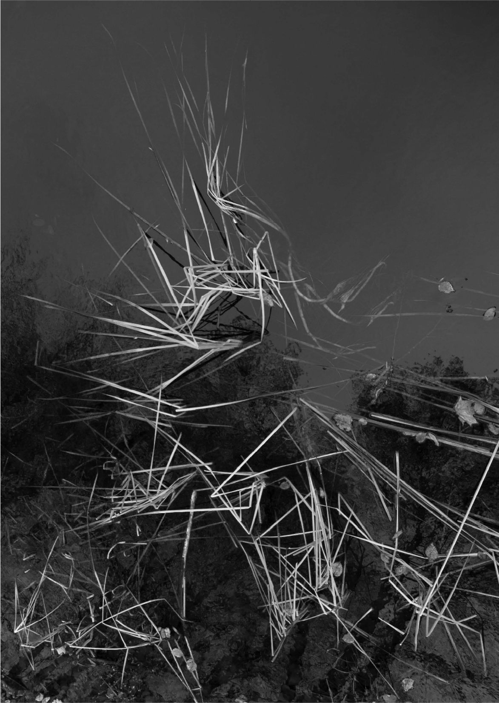
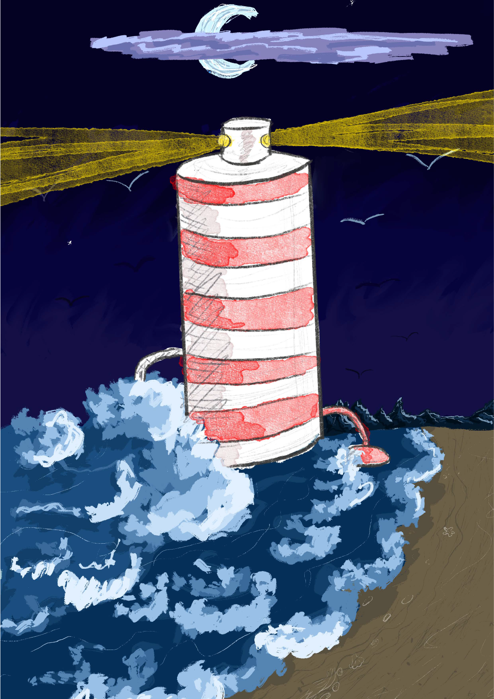
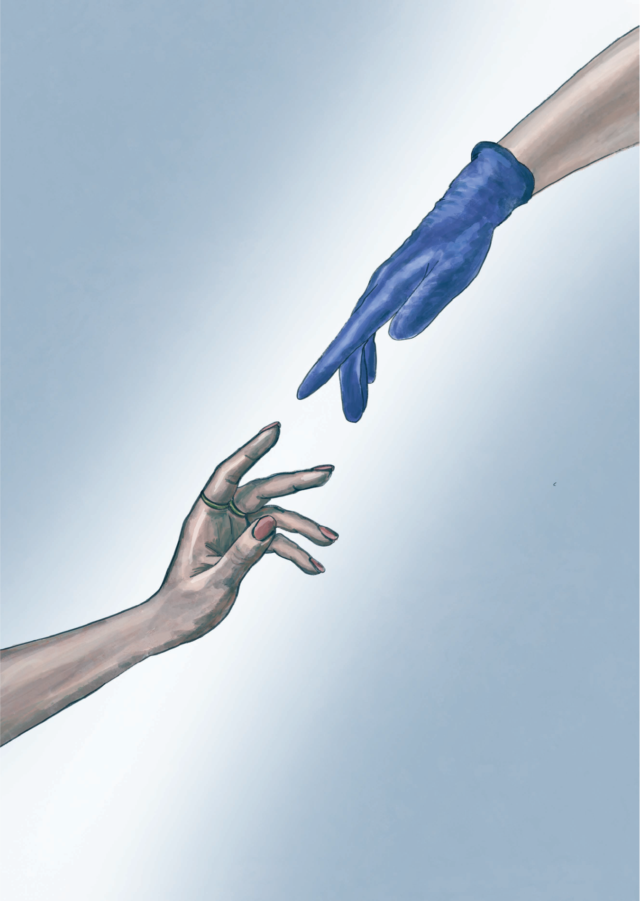
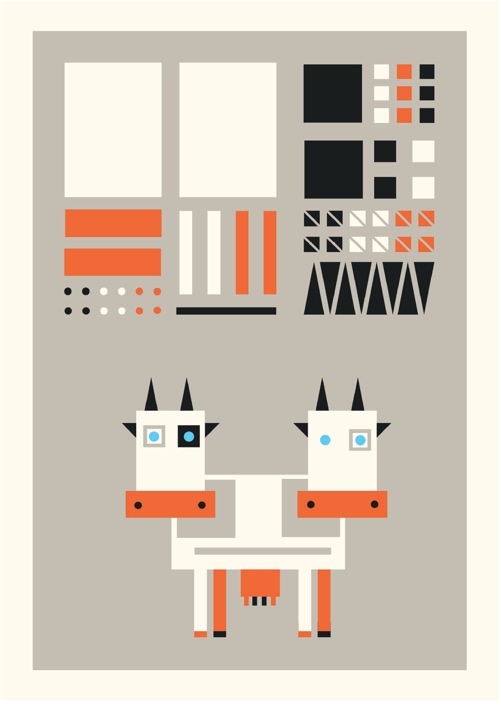

НУМАРЫ

АРТЫКУЛЫ

Матэматычны аналiз i крыптабiржы

Фізіка айсбергаў

Соль + вада = электрычнасць, або Яшчэ адзін крок да энергетычнай аўтаноміі

Што ня так з падыходам evidence based у галіне здароўя?

Генэтычны рэдактар СRISPR-Cas